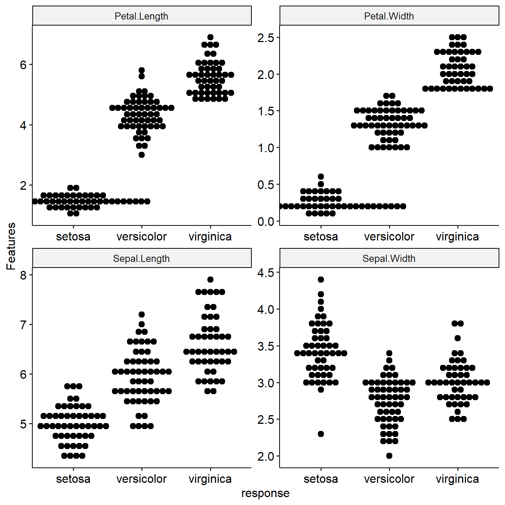
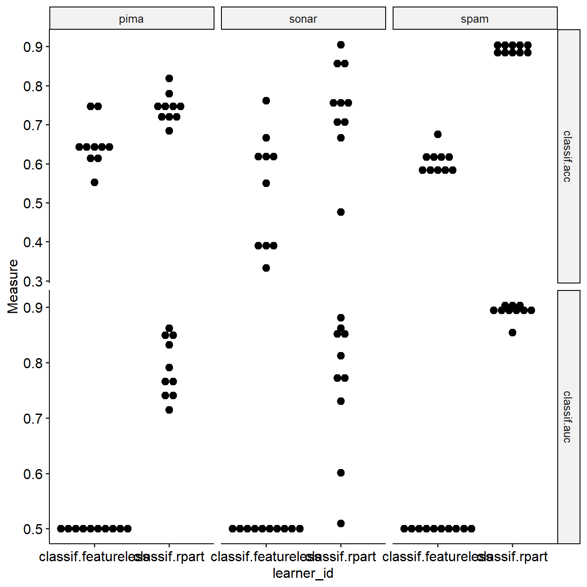
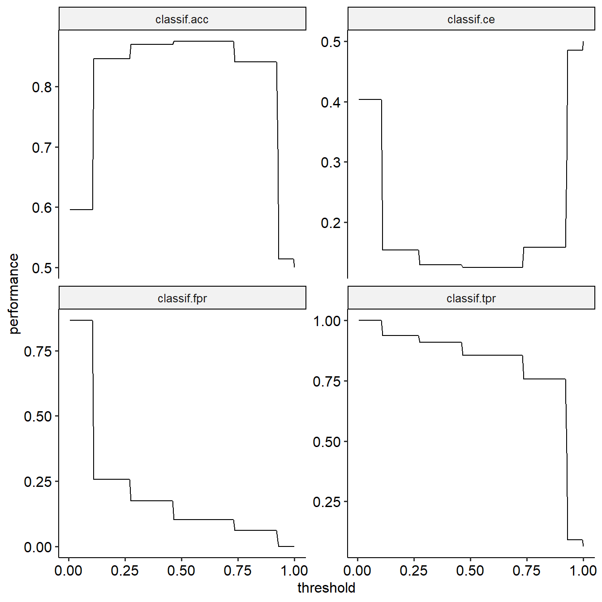

mlr3 vis development
Linlin Yin
2019-06-28
mlr3vis_dev.Rmd#library(mlr3)
#library(ggplot2)
#library(data.table)
#library(dplyr)
#library(checkmate)
#devtools::load_all("d:/source/mlr3vis/")
library(mlr3)
library(mlr3vis)
#> Loading required package: data.table
#> Warning: package 'data.table' was built under R version 3.5.3
#> Loading required package: ggplot2
#> Loading required package: ggpubr
#> Loading required package: magrittr
#> mlr3vis global settings: mlr_plot_theme=theme_pubrmlr: https://mlr.mlr-org.com/articles/tutorial/predict.html
mlr3: https://mlr3book.mlr-org.com/
plotLearnerPrediction
task = mlr_tasks$get("iris")
learner = mlr_learners$get("classif.rpart")
plotLearnerPrediction(learner=learner,task=task,prob.alpha = FALSE)
plotLearnerPrediction(learner=learner,task=task,prob.alpha = TRUE, interestedFeatures= c("Sepal.Length","Sepal.Width"))
Experiment related visualization
plotLearnerPrediction based on Experiment (in the same function)
task = mlr_tasks$get("iris")
learner = mlr_learners$get("classif.rpart")
learner$predict_type = "prob"
e = Experiment$new(task = task, learner = learner)$train()$predict()
e$performance #NULL
#> NULL
e$score()$performance
#> classif.ce
#> 0.04
plotLearnerPrediction(e=e)
summaryFeatureByPrediction based on Experiment
To show the distribution of features among truth or response groups.
summaryFeatureByPrediction(e,groupVar="truth")
#> Loading required package: lattice
#> Loading required package: survival
#> Loading required package: Formula
#>
#> Attaching package: 'Hmisc'
#> The following objects are masked from 'package:base':
#>
#> format.pval, unitsDescriptive Statistics (N=150)
| setosa (N=50) | versicolor (N=50) | virginica (N=50) | Test Statistic | |
| Petal.Length | |
|
|
F=515.64 d.f.=2,147 P<0.001 |
| Petal.Width | |
|
|
F=541.25 d.f.=2,147 P<0.001 |
| Sepal.Length | |
|
|
F=136.85 d.f.=2,147 P<0.001 |
| Sepal.Width | |
|
|
F=54.69 d.f.=2,147 P<0.001 |
Descriptive Statistics (N=150)
| setosa (N=50) | versicolor (N=54) | virginica (N=46) | Test Statistic | |
| Petal.Length | |
|
|
F=429.53 d.f.=2,147 P<0.001 |
| Petal.Width | |
|
|
F=634.95 d.f.=2,147 P<0.001 |
| Sepal.Length | |
|
|
F=141.79 d.f.=2,147 P<0.001 |
| Sepal.Width | |
|
|
F=62.06 d.f.=2,147 P<0.001 |
plotFeatureByPrediction based on Experiment
To plot the distribution of features among truth or response groups.

plotFeatureByPrediction(e,groupVar="response",style = "dot")
#> Warning: Ignoring unknown parameters: size
#> `stat_bindot()` using `bins = 30`. Pick better value with `binwidth`.
benchmark related
# get some example tasks
tasks = mlr_tasks$mget(c("pima", "sonar", "spam"))
# set measures for all tasks: accuracy (acc) and area under the curve (auc)
measures = mlr_measures$mget(c("classif.acc", "classif.auc"))
tasks = lapply(tasks, function(task) { task$measures = measures; task })
# get a featureless learner and a classification tree
learners = mlr_learners$mget(c("classif.featureless", "classif.rpart"))
# let the learners predict probabilities instead of class labels (required for AUC measure)
learners$classif.featureless$predict_type = "prob"
learners$classif.rpart$predict_type = "prob"
# compare via 10-fold cross validation
resamplings = mlr_resamplings$mget("cv")
# create a BenchmarkResult object
design = expand_grid(tasks, learners, resamplings)
print(design)
#> task learner resampling
#> 1: <TaskClassif> <LearnerClassifFeatureless> <ResamplingCV>
#> 2: <TaskClassif> <LearnerClassifRpart> <ResamplingCV>
#> 3: <TaskClassif> <LearnerClassifFeatureless> <ResamplingCV>
#> 4: <TaskClassif> <LearnerClassifRpart> <ResamplingCV>
#> 5: <TaskClassif> <LearnerClassifFeatureless> <ResamplingCV>
#> 6: <TaskClassif> <LearnerClassifRpart> <ResamplingCV>
bmr = benchmark(design)
#bmr
#bmr$aggregated(objects = FALSE)
#bmr$aggregated(objects = FALSE)[, list(acc = mean(classif.acc), auc = mean(classif.auc)), by = "learner_id"]plotBMRBoxplots

#Different facet and violin plot
plotBMRBoxplots(bmr,style = "violin",xVar="task_id",facet_x="measure",facet_y="learner_id")#Dot plot
plotBMRBoxplots(bmr,style = "dot")
#> Warning: Ignoring unknown parameters: size
#> `stat_bindot()` using `bins = 30`. Pick better value with `binwidth`.
Visualization of ThreshVsPerfData
generateThreshVsPerfData and plotThreshVsPerf
task = mlr_tasks$get("sonar")
task$measures
#> [[1]]
#> <MeasureClassifCE:classif.ce>
#> Packages: Metrics
#> Range: [0, 1]
#> Minimize: TRUE
#> Predict type: response
measures = mlr_measures$mget(c("classif.acc","classif.ce","classif.fpr","classif.tpr"))
task$measures = measures
learner = mlr_learners$get("classif.rpart",predict_type = "prob")
#learner$predict_type
#learner$predict_type = "prob"
e = Experiment$new(task = task, learner = learner)$train()$predict()
e$performance #NULL
#> NULL
e$score()$performance
#> classif.acc classif.ce classif.fpr classif.tpr
#> 0.8750000 0.1250000 0.1030928 0.8558559
performanceByThreshold=generateThreshVsPerfData(e,gridsize = 200)
plotThreshVsPerf(performanceByThreshold)

generateThreshVsPerfData and plotThreshVsPerf for Benchmark object
set.seed(123)
tasks = mlr_tasks$mget(c("sonar"))
measures = mlr_measures$mget(c("classif.ce","classif.fpr","classif.tpr"))
tasks = lapply(tasks, function(task) { task$measures = measures; task })
design = expand_grid(
task = tasks,
learner = mlr_learners$mget(c("classif.rpart", "classif.featureless"),predict_type = "prob"),
resampling = mlr_resamplings$mget("holdout")
)
print(design)
#> task learner resampling
#> 1: <TaskClassif> <LearnerClassifRpart> <ResamplingHoldout>
#> 2: <TaskClassif> <LearnerClassifFeatureless> <ResamplingHoldout>
## task learner resampling
## 1: <TaskClassif> <LearnerClassifRpart> <ResamplingHoldout>
## 2: <TaskClassif> <LearnerClassifFeatureless> <ResamplingHoldout>
bmr = benchmark(design)
performanceData=generateThreshVsPerfDataInBenchmark(bmr)
plotThreshVsPerf(performanceData)